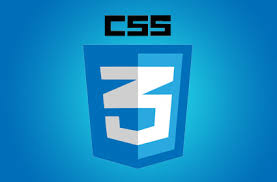
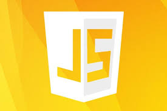
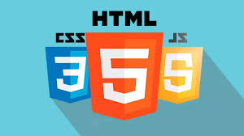

HTML (HyperText Markup Language) — це мова, за допомогою якої створюються веб-сторінки. Уяви, що HTML — це основа або каркас веб-сайту, де кожен елемент має свою роль.
HTML використовує теги, щоб визначити різні частини сторінки. Наприклад:
<h1> — це заголовок найвищого рівня.
<p> — це абзац тексту.
<img> — це картинка.
<a> — це посилання.
Теги HTML допомагають браузеру зрозуміти, як правильно відобразити різні елементи на сторінці. Завдяки HTML створюються структури веб-сторінок: текст, картинки, посилання, таблиці, списки та інші елементи, які ти бачиш на сайтах.
Так, HTML — це основа, на яку вже накладаються стилі (через CSS) та інтерактивність (через JavaScript).

CSS — це мова, яку використовують для оформлення веб-сторінок. Уяви, що HTML — це скелет веб-сторінки, а CSS — це її "одяг" і "макіяж". CSS дозволяє змінювати:
Колір тексту (наприклад, зробити текст червоним або зеленим).
Шрифт (можна вибрати різні стилі шрифтів, наприклад, курсив або жирний).
Розміри (можна робити текст більшим або меншим, змінювати розміри елементів на сторінці).
Розташування елементів (це дозволяє, наприклад, поставити кнопку по центру екрану).
Відступи (можна додавати простір навколо тексту чи картинок, щоб вони не прилипали до країв).
Анімації (наприклад, можна зробити кнопку, що змінює колір або переміщається при наведенні миші).
CSS допомагає зробити сайт не тільки красивим, але й зручним для користувачів.

JavaScript (JS) — це мова програмування, яка використовується для створення інтерактивних елементів на веб-сторінках. За допомогою JS можна додавати різні функції до сайтів, щоб вони були більш динамічними і зручними для користувачів.
Наприклад, з допомогою JavaScript можна:
Перевіряти форми на веб-сайті перед їх відправкою, щоб переконатися, що введені дані правильні.
Створювати анімовані ефекти (наприклад, анімація при натисканні кнопки або плавне прокручування).
Змінювати вміст сторінки без перезавантаження, використовуючи технологію AJAX (наприклад, підвантаження нових даних).
Реалізовувати ігри чи інтерактивні додатки прямо в браузері.
JS зазвичай працює на клієнтському боці (тобто безпосередньо в браузері користувача), але є можливість використовувати його і на сервері (наприклад, за допомогою Node.js).
Отже, JavaScript допомагає зробити сайти живими та інтерактивними!

HTML, CSS і JavaScript — це як три нерозлучні близнюки, які разом створюють веб-сторінки!
HTML — це каркас, основа. Він визначає, що буде на сторінці: текст, зображення, посилання. Це як скелет сайту.
CSS — це стиль. Він робить сторінку красивою, змінюючи шрифти, кольори, розташування елементів. Це як одяг для сайту.
JavaScript — це рух. Він додає інтерактивність, дозволяючи сайту бути "живим". Завдяки JS, сайт може реагувати на дії користувача, наприклад, відкривати вікна чи анімувати елементи.
Разом ці три технології працюють, щоб створити не тільки корисну, а й цікаву, красиву веб-сторінку.
